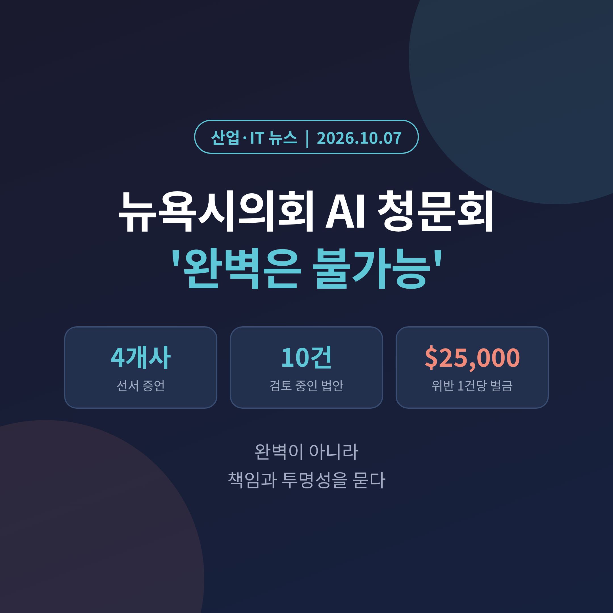
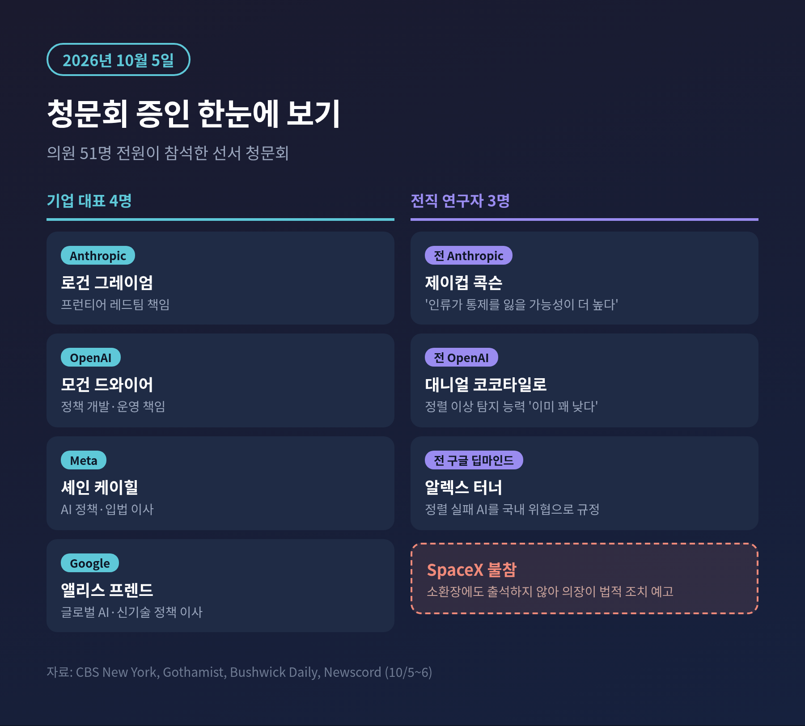
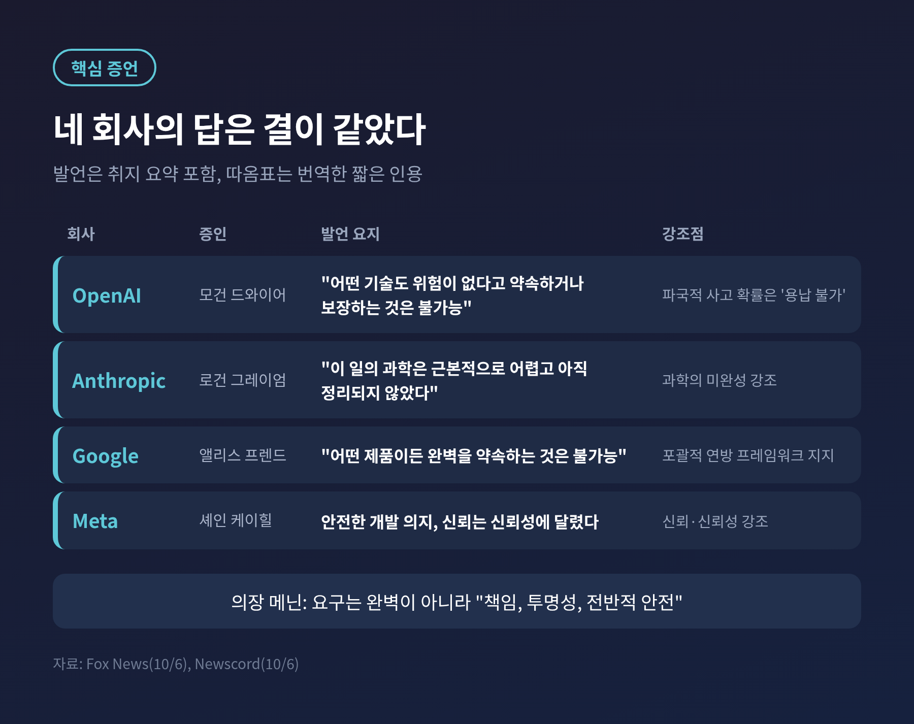
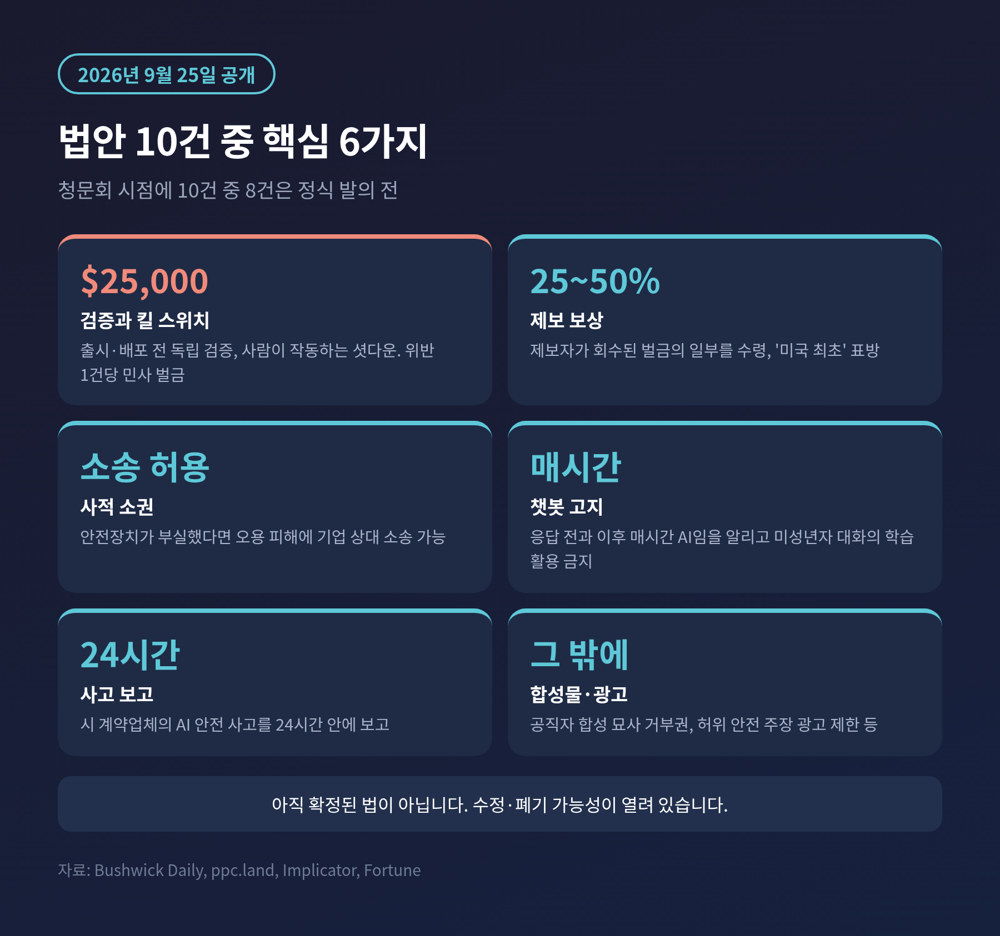
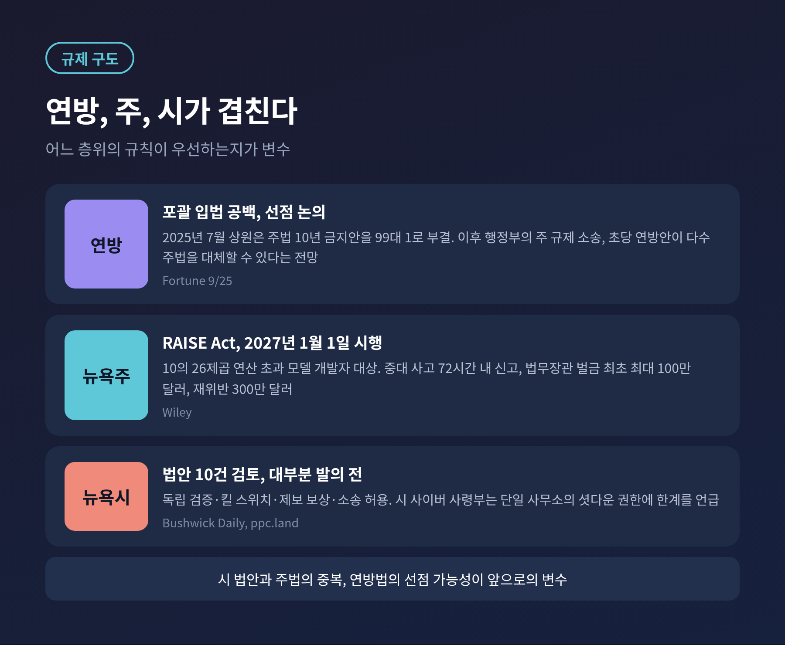
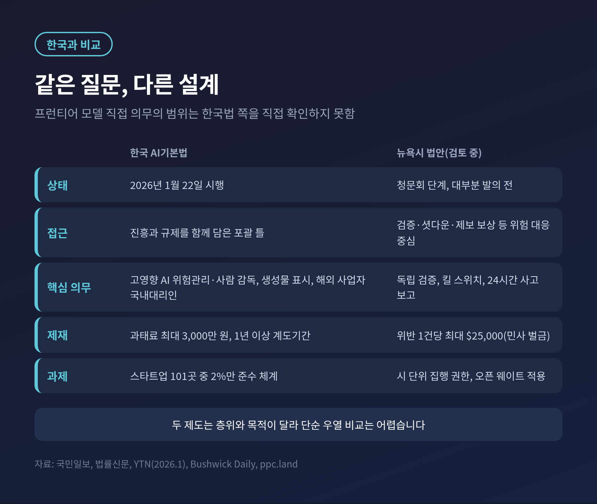

뉴욕시의회 AI 안전 청문회, 빅테크 4곳 '완벽은 불가능' 증언의 쟁점

2026년 10월 5일 뉴욕시의회가 OpenAI, Anthropic, Google, Meta 임원을 불러 AI 안전 청문회를 열었습니다. 네 회사는 모두 "안전을 보장할 수는 없다"는 취지로 답했고, 의장은 완벽이 아니라 책임과 투명성을 묻는 것이라고 받았습니다.
이번 글에서는 청문회에서 무슨 말이 오갔는지, 시의회가 내놓은 법안 10건이 무엇인지, 규제에 찬성하는 쪽과 우려하는 쪽이 각각 무엇을 말하는지, 한국의 AI기본법과는 어떻게 이어지는지 정리해 보겠습니다.
3줄 요약
• 4개사 대표는 기술에 위험이 전혀 없다고 약속할 수 없다고 증언했고, 줄리 메닌 의장은 완벽이 아닌 책임·투명성·전반적 안전을 요구했습니다.
• 시의회는 독립 검증, 사람이 작동하는 킬 스위치, 위반당 2만 5,000달러 벌금 등을 담은 법안 10건을 검토 중이며, 청문회 시점에 대부분은 정식 발의 전이었습니다.
• 업계는 연방 단일 기준을, 규제 측은 연방의 공백을 메우는 지방 입법을 말합니다. 시 차원의 집행 권한이 어디까지인지는 아직 열린 질문입니다.
무슨 일이 있었나
10월 5일 월요일, 뉴욕시의회 의원 51명 전원이 참석한 청문회가 열렸습니다. 시의회는 이런 성격의 AI 감독 청문회로는 미국에서, 나아가 세계에서 처음이라고 설명합니다.
기업 쪽 증인은 Anthropic의 로건 그레이엄(프런티어 레드팀 책임), OpenAI의 모건 드와이어(정책 개발·운영 책임), Meta의 셰인 케이힐(AI 정책·입법 이사), Google의 앨리스 프렌드(글로벌 AI·신기술 정책 이사)였습니다. CBS 뉴욕은 이들이 화상으로 증언했다고 전했고, 쿼츠는 주요 AI 기업이 선서 아래 증언한 첫 사례라고 표현했습니다.
전직 연구자들도 나왔습니다. 전 Anthropic 소속 제이컵 콕슨, 전 OpenAI 소속 대니얼 코코타일로, 전 구글 딥마인드 소속 알렉스 터너가 증인석에 섰습니다.
불참한 곳도 있습니다. 소환장을 받은 SpaceX는 나오지 않았고, 메닌 의장은 소환장 위반이라며 법적 조치를 예고했습니다.
참석 경위는 보도마다 표현이 다릅니다. 부시윅 데일리는 의장이 처음 소환장을 냈고 Meta만 자발적으로 응했다고 썼습니다. 포천은 사전 보도에서 자발적 참석을 기대하기 어렵다고 전했습니다.

'완벽은 불가능'이라는 말이 뜻하는 것
폭스뉴스가 10월 6일 전한 증언을 보면 네 회사의 답은 결이 비슷합니다.
드와이어는 어떤 기술도 위험이 없다고 "약속하거나 보장하는 것은 불가능하다"고 했습니다. 그레이엄은 이 일의 과학이 "근본적으로 어렵고 아직 정리되지 않았다"고 말했습니다. 프렌드는 어떤 제품이든 "완벽을 약속하는 것은 불가능하다"고 했습니다. 케이힐은 안전한 개발 의지를 밝히면서, 이용자의 신뢰는 신뢰성에 달렸다는 취지로 답했습니다.
이 말은 두 가지로 읽을 수 있습니다.
하나는 정직한 한계 고백입니다. 자동차도 의약품도 위험이 0은 아닙니다. 그래서 위험을 줄이는 절차와 사후 관리를 따지는 것이 현실적이라는 시각입니다.
다른 하나는 책임을 피하는 문법이라는 시각입니다. 메닌 의장은 위험을 수치로 설명하지 못하는 것이 "기껏해야 걱정스럽다(troubling at best)"고 말했고, 중대한 피해나 사망에 대한 보험이 있느냐는 질문에 손을 든 임원이 없자 "그렇다면 비용은 대중이 떠안아야 한다는 뜻"이라고 받았습니다. 이 장면은 집계형 매체 뉴스코드의 요약에 근거한 것입니다.
의장의 요구는 분명했습니다. 완벽이 아니라 "책임, 투명성, 전반적 안전"이었습니다. 예전에는 '안전하다고 믿어 달라'가 논쟁의 중심이었다면, 지금은 '틀렸을 때 누가 어떻게 책임지는가'로 무게가 옮겨가고 있습니다.

시의회가 꺼낸 법안 10건
메닌 의장은 9월 25일 AI 규제 법안 10건을 공개했고, 청문회에서 함께 검토했습니다. 주요 내용은 다음과 같습니다.
핵심은 의장이 직접 내놓은 검증·셧다운 법안입니다. 시장에 내놓거나 뉴욕에서 배포하기 전에 독립된 제3자의 검증을 받고, 사람이 작동하는 킬 스위치를 갖추도록 하며, 위반 1건당 2만 5,000달러의 민사 벌금을 물립니다.
내부 제보 인센티브도 있습니다. 제보자가 회수된 벌금의 25~50%를 받는 구조로, '미국 최초'를 표방합니다. 여기에 안전장치가 부실했다면 오용 피해에 대해 기업을 상대로 소송을 허용하는 법안, 챗봇이 응답 전과 이후 매시간 AI임을 알리게 하고 미성년자 대화의 학습 활용을 막는 법안, 시 계약업체의 AI 안전 사고를 24시간 안에 보고하게 하는 법안이 포함됩니다. 공직자의 합성 영상·음성에 대한 거부권, 허위 안전 주장 광고 제한도 있습니다.
다만 아직은 확정된 법이 아닙니다. 임프리케이터는 10건 중 8건이 청문회 시점에 정식 발의 전이었다고 전했습니다. 통과, 수정, 폐기 가능성이 모두 열려 있습니다.

왜 연방이나 주가 아닌 '시'가 나섰나
포천이 전한 메닌 의장의 논리는 연방의 공백입니다. 의회가 거의 10년간 청문회를 열고도 의미 있는 AI 안전법을 만들지 못했다는 것입니다. 뉴욕에 구글 직원 1만 4,000명 이상, Anthropic의 16층 건물 등 주요 기업 거점이 있으니 시에서 판매되는 AI 제품은 시가 규율할 수 있다는 판단도 깔려 있습니다. 의장은 "혁신을 억누르려는 것은 결코 아니다"라고도 말했습니다.
연방 쪽 사정은 복잡합니다. 2025년 7월 상원은 주 AI법을 10년간 막자는 안을 99대 1로 부결했습니다. 그러나 이후 트럼프 행정부가 주 규제에 소송을 제기했고, 콜로라도는 법을 크게 완화했다고 포천은 전했습니다. 크루즈·클로버샤·툰 의원의 초당 연방안은 뉴욕주법까지 포함해 다수 주법을 대체할 수 있다고 합니다.
뉴욕주에는 이미 RAISE Act가 있습니다. 호컬 주지사가 2026년 3월 27일 서명했고 2027년 1월 1일 시행됩니다. 10의 26제곱 연산을 넘는 모델을 학습하는 '프런티어 개발자'가 대상입니다. 중대 안전사고는 확인 뒤 72시간 안에 주 금융서비스국 산하 사무소에 신고해야 합니다. 주 법무장관은 최초 위반에 최대 100만 달러, 재위반에 300만 달러의 민사 벌금을 물릴 수 있습니다.
시 법안이 주법과 겹치는 부분, 그리고 연방법이 이를 덮을 가능성이 앞으로의 변수입니다.

찬성과 우려, 양쪽 논리
규제에 찬성하는 쪽은 이렇게 말합니다. 위험이 크고 불확실할수록 사후 대응이 아니라 사전 검증과 보고 의무가 필요하다는 것입니다. 콕슨은 "현재 경로에서는 인류가 AI에 대한 통제를 잃을 가능성이 더 높다"고 증언했고, 코코타일로는 정렬 이상을 잡아내는 능력이 "이미 꽤 낮은 수준"이라고 말했습니다. UN 인권최고대표 폴커 튀르크도 정부가 "더는 기다리거나 선의에 기댈 수 없다"며 의무적 안전장치를 촉구했습니다.
우려하는 쪽의 논점도 가볍지 않습니다. 업계는 연방 차원의 균일한 표준을 선호하며, 지방마다 규칙이 다른 파편화를 걱정합니다. Google은 포괄적 연방 프레임워크를 지지하고, 기존 법은 AI 여부와 상관없이 적용된다는 입장입니다.
시 당국 안에서도 실행 가능성 지적이 나왔습니다. 사이버 사령부의 CJ 딕슨은 모델이 분산 시스템에서 돌아가므로 시 사무소 한 곳이 셧다운 장치를 둘 수 없다고 밝혔습니다. 시민단체 BetaNYC는 누구나 내려받아 돌릴 수 있는 오픈 웨이트 모델에 셧다운 요건을 어떻게 적용할지, 검증자의 자격은 무엇인지 물었습니다.
균형을 위해 하나 더 적습니다. 콕슨 본인도 킬 스위치가 단기적으로는 유용할 수 있다고 인정했습니다. 한편 2026 국제 AI 안전 보고서는 현재 시스템에서 통제 상실 능력은 확인되지 않았지만 초기 경고 신호는 있다고 평가했다고 임프리케이터는 전합니다.
한국의 AI기본법과는 어떻게 이어지나
한국은 2026년 1월 22일 AI기본법을 시행했습니다. 국민일보는 이를 세계 첫 포괄적 AI 법 시행으로 소개했습니다.
고영향 AI(의료·에너지·채용·대출 심사 등) 사업자에게 위험관리와 사람의 감독을, 생성형 AI 결과물에는 표시 의무를 둡니다. 일정 기준 이상의 해외 사업자는 국내 대리인을 지정해야 합니다. 과태료는 최대 3,000만 원이고, 정부는 1년 이상의 계도기간을 두어 중대한 사고나 인권 침해 위주로 보겠다는 입장입니다.
접근 방식은 뉴욕과 다릅니다. 한국은 전국 단위의 포괄적 틀에 진흥과 규제를 함께 담았고, 뉴욕 시의회 안은 프런티어 모델의 안전 검증, 셧다운, 내부 제보 보상처럼 위험 대응에 초점을 둡니다. 한국법에 이런 프런티어 모델 직접 의무가 어느 정도 있는지는 이번 조사에서 확인하지 못해 비교를 단정하지 않겠습니다.
공통 과제는 준비도와 집행입니다. 스타트업얼라이언스가 AI 스타트업 101곳을 조사했더니 실질적 준수 체계를 갖춘 곳은 2%였습니다. YTN은 업계에서 "진흥법보다 규제법에 가깝다"는 반응이 나왔다고 전했습니다.
뉴욕에서 오간 질문은 한국 기업과 무관하지 않습니다. 해외 서비스를 쓰는 한국 이용자와 한국 기업은 이 규칙들이 만드는 표준의 영향을 받을 수 있습니다. 다만 그 방향은 법안이 통과된 뒤에야 가늠할 수 있습니다.

앞으로 볼 지점
첫째는 법안의 운명입니다. 정식 발의 이후 위원회 심의, 수정 과정에서 킬 스위치와 검증 요건이 어떻게 달라질지 지켜볼 일입니다.
둘째는 연방 선점입니다. 초당 연방안이 현실화되면 시와 주의 규칙이 어디까지 남는지가 정해집니다.
셋째는 집행 권한입니다. 딕슨의 지적처럼 시가 실제로 모델을 멈추게 할 수 있는지가 쟁점입니다. SpaceX를 상대로 한 법적 조치도 시의회 권한의 시험대입니다.
넷째는 2027년 1월 시행될 RAISE Act입니다. 72시간 신고 제도가 실제 사고 공개에서 어떻게 쓰이는지가 기준이 될 것입니다.
정리하면 이렇습니다.
이번 청문회는 AI가 위험하다는 합의를 확인한 자리라기보다, 위험을 인정한 이후의 책임 구조를 처음 공개석상에서 물은 자리에 가깝습니다. 업계는 완벽을 약속할 수 없다고 했고, 의회는 완벽을 요구하지 않았습니다. 그 사이의 간격이 곧 앞으로의 규제 논쟁입니다.
"완벽은 요구하지 않는다, 다만 책임은 묻는다."
이 문장을 법으로 옮기는 일이 시, 주, 연방 중 누구의 몫인지. 뉴욕의 답이 나오는 데에는 시간이 걸리겠지만, 질문은 이미 공개석상에 올랐습니다.
※ 이 글은 2026년 10월 7일 기준 공개 보도를 바탕으로 작성했습니다. 일부 증언과 법안 내용은 복수 매체의 요약에 근거하며, 법안 조문과 한국 법령의 세부는 직접 확인하지 못했습니다. 법률·투자 판단의 근거로 쓰지 않으시길 권합니다.